2. Stat API¶
-
class
pyspark.ml.stat.ChiSquareTest[source]¶ Note
Experimental
Conduct Pearson’s independence test for every feature against the label. For each feature, the (feature, label) pairs are converted into a contingency matrix for which the Chi-squared statistic is computed. All label and feature values must be categorical.
The null hypothesis is that the occurrence of the outcomes is statistically independent.
New in version 2.2.0.
-
static
test(dataset, featuresCol, labelCol)[source]¶ Perform a Pearson’s independence test using dataset.
Parameters: - dataset – DataFrame of categorical labels and categorical features. Real-valued features will be treated as categorical for each distinct value.
- featuresCol – Name of features column in dataset, of type 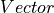 (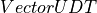).
- labelCol – Name of label column in dataset, of any numerical type.
Returns: DataFrame containing the test result for every feature against the label. This DataFrame will contain a single Row with the following fields: - 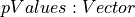 - 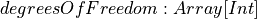 - 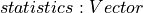 Each of these fields has one value per feature.
>>> from pyspark.ml.linalg import Vectors >>> from pyspark.ml.stat import ChiSquareTest >>> dataset = [[0, Vectors.dense([0, 0, 1])], ... [0, Vectors.dense([1, 0, 1])], ... [1, Vectors.dense([2, 1, 1])], ... [1, Vectors.dense([3, 1, 1])]] >>> dataset = spark.createDataFrame(dataset, ["label", "features"]) >>> chiSqResult = ChiSquareTest.test(dataset, 'features', 'label') >>> chiSqResult.select("degreesOfFreedom").collect()[0] Row(degreesOfFreedom=[3, 1, 0])
New in version 2.2.0.
-
static
-
class
pyspark.ml.stat.Correlation[source]¶ Note
Experimental
Compute the correlation matrix for the input dataset of Vectors using the specified method. Methods currently supported: 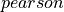 (default), 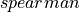.
Note
For Spearman, a rank correlation, we need to create an RDD[Double] for each column and sort it in order to retrieve the ranks and then join the columns back into an RDD[Vector], which is fairly costly. Cache the input Dataset before calling corr with 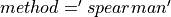 to avoid recomputing the common lineage.
New in version 2.2.0.
-
static
corr(dataset, column, method='pearson')[source]¶ Compute the correlation matrix with specified method using dataset.
Parameters: - dataset – A Dataset or a DataFrame.
- column – The name of the column of vectors for which the correlation coefficient needs to be computed. This must be a column of the dataset, and it must contain Vector objects.
- method – String specifying the method to use for computing correlation. Supported: (default), .
Returns: A DataFrame that contains the correlation matrix of the column of vectors. This DataFrame contains a single row and a single column of name ‘$METHODNAME($COLUMN)’.
>>> from pyspark.ml.linalg import Vectors >>> from pyspark.ml.stat import Correlation >>> dataset = [[Vectors.dense([1, 0, 0, -2])], ... [Vectors.dense([4, 5, 0, 3])], ... [Vectors.dense([6, 7, 0, 8])], ... [Vectors.dense([9, 0, 0, 1])]] >>> dataset = spark.createDataFrame(dataset, ['features']) >>> pearsonCorr = Correlation.corr(dataset, 'features', 'pearson').collect()[0][0] >>> print(str(pearsonCorr).replace('nan', 'NaN')) DenseMatrix([[ 1. , 0.0556..., NaN, 0.4004...], [ 0.0556..., 1. , NaN, 0.9135...], [ NaN, NaN, 1. , NaN], [ 0.4004..., 0.9135..., NaN, 1. ]]) >>> spearmanCorr = Correlation.corr(dataset, 'features', method='spearman').collect()[0][0] >>> print(str(spearmanCorr).replace('nan', 'NaN')) DenseMatrix([[ 1. , 0.1054..., NaN, 0.4 ], [ 0.1054..., 1. , NaN, 0.9486... ], [ NaN, NaN, 1. , NaN], [ 0.4 , 0.9486... , NaN, 1. ]])
New in version 2.2.0.
-
static
-
class
pyspark.ml.stat.KolmogorovSmirnovTest[source]¶ Note
Experimental
Conduct the two-sided Kolmogorov Smirnov (KS) test for data sampled from a continuous distribution.
By comparing the largest difference between the empirical cumulative distribution of the sample data and the theoretical distribution we can provide a test for the the null hypothesis that the sample data comes from that theoretical distribution.
New in version 2.4.0.
-
static
test(dataset, sampleCol, distName, *params)[source]¶ Conduct a one-sample, two-sided Kolmogorov-Smirnov test for probability distribution equality. Currently supports the normal distribution, taking as parameters the mean and standard deviation.
Parameters: - dataset – a Dataset or a DataFrame containing the sample of data to test.
- sampleCol – Name of sample column in dataset, of any numerical type.
- distName – a 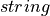 name for a theoretical distribution, currently only support “norm”.
- params – a list of 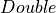 values specifying the parameters to be used for the theoretical distribution. For “norm” distribution, the parameters includes mean and variance.
Returns: A DataFrame that contains the Kolmogorov-Smirnov test result for the input sampled data. This DataFrame will contain a single Row with the following fields: - 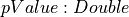 - 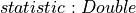
>>> from pyspark.ml.stat import KolmogorovSmirnovTest >>> dataset = [[-1.0], [0.0], [1.0]] >>> dataset = spark.createDataFrame(dataset, ['sample']) >>> ksResult = KolmogorovSmirnovTest.test(dataset, 'sample', 'norm', 0.0, 1.0).first() >>> round(ksResult.pValue, 3) 1.0 >>> round(ksResult.statistic, 3) 0.175 >>> dataset = [[2.0], [3.0], [4.0]] >>> dataset = spark.createDataFrame(dataset, ['sample']) >>> ksResult = KolmogorovSmirnovTest.test(dataset, 'sample', 'norm', 3.0, 1.0).first() >>> round(ksResult.pValue, 3) 1.0 >>> round(ksResult.statistic, 3) 0.175
New in version 2.4.0.
-
static
-
class
pyspark.ml.stat.Summarizer[source]¶ Note
Experimental
Tools for vectorized statistics on MLlib Vectors. The methods in this package provide various statistics for Vectors contained inside DataFrames. This class lets users pick the statistics they would like to extract for a given column.
>>> from pyspark.ml.stat import Summarizer >>> from pyspark.sql import Row >>> from pyspark.ml.linalg import Vectors >>> summarizer = Summarizer.metrics("mean", "count") >>> df = sc.parallelize([Row(weight=1.0, features=Vectors.dense(1.0, 1.0, 1.0)), ... Row(weight=0.0, features=Vectors.dense(1.0, 2.0, 3.0))]).toDF() >>> df.select(summarizer.summary(df.features, df.weight)).show(truncate=False) +-----------------------------------+ |aggregate_metrics(features, weight)| +-----------------------------------+ |[[1.0,1.0,1.0], 1] | +-----------------------------------+ <BLANKLINE> >>> df.select(summarizer.summary(df.features)).show(truncate=False) +--------------------------------+ |aggregate_metrics(features, 1.0)| +--------------------------------+ |[[1.0,1.5,2.0], 2] | +--------------------------------+ <BLANKLINE> >>> df.select(Summarizer.mean(df.features, df.weight)).show(truncate=False) +--------------+ |mean(features)| +--------------+ |[1.0,1.0,1.0] | +--------------+ <BLANKLINE> >>> df.select(Summarizer.mean(df.features)).show(truncate=False) +--------------+ |mean(features)| +--------------+ |[1.0,1.5,2.0] | +--------------+ <BLANKLINE>
New in version 2.4.0.
-
static
metrics(*metrics)[source]¶ Given a list of metrics, provides a builder that it turns computes metrics from a column.
See the documentation of [[Summarizer]] for an example.
- The following metrics are accepted (case sensitive):
- mean: a vector that contains the coefficient-wise mean.
- variance: a vector tha contains the coefficient-wise variance.
- count: the count of all vectors seen.
- numNonzeros: a vector with the number of non-zeros for each coefficients
- max: the maximum for each coefficient.
- min: the minimum for each coefficient.
- normL2: the Euclidian norm for each coefficient.
- normL1: the L1 norm of each coefficient (sum of the absolute values).
Parameters: metrics – metrics that can be provided. Returns: an object of pyspark.ml.stat.SummaryBuilderNote: Currently, the performance of this interface is about 2x~3x slower then using the RDD interface.
New in version 2.4.0.
-
static
-
class
pyspark.ml.stat.SummaryBuilder(jSummaryBuilder)[source]¶ Note
Experimental
A builder object that provides summary statistics about a given column.
Users should not directly create such builders, but instead use one of the methods in
pyspark.ml.stat.SummarizerNew in version 2.4.0.
-
summary(featuresCol, weightCol=None)[source]¶ Returns an aggregate object that contains the summary of the column with the requested metrics.
Parameters: - featuresCol – a column that contains features Vector object.
- weightCol – a column that contains weight value. Default weight is 1.0.
Returns: an aggregate column that contains the statistics. The exact content of this structure is determined during the creation of the builder.
New in version 2.4.0.
-